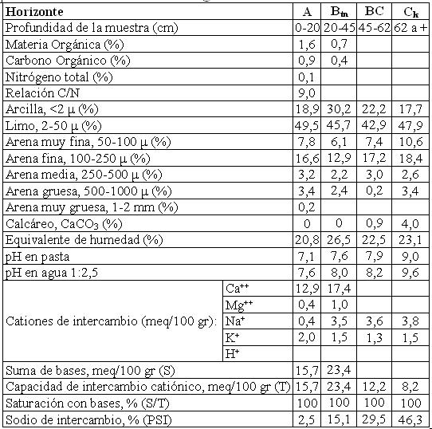

Natrustol típico, franca fina, mixta, térmica (fluvial)
Capacidad de uso: IVsc
Este suelo se ha desarrollado sobre sedimentos fluviales o aluviales en ambientes de derrames o terrazas antiguas vinculadas al Río Primero. Ocupa un relieve relativamente deprimido o planos normalmente conformando complejos de suelos con otros de diferente aptitud en una distribución muy heterogénea. Presenta un horizonte A de 20 cm de espesor de color oscuro con textura franca a franco limosa y estructura en bloques. Continúa hacia abajo el horizonte subsuperficial Btn con enriquecimiento de arcillas sódicas (pH 8) con estructura en prismas y barnices comunes a abundantes en las caras de los agregados, se extiende hasta 45 cm. Luego de una transición, el material originario del suelo aparece a 62 cm de profundidad con moderada reacción al ClH en la masa del suelo.
Descripción del perfil típico:
Un perfil representativo de esta serie fue descripto a 7 km al Este de la localidad de Diego de Rojas, departamento Río Primero, provincia de Córdoba.
A 0-20 cm; color en húmedo pardo grisáceo muy oscuro (10YR3/2), franco a franco limoso, estructura en bloques subangulares medios moderados, friable en húmedo, no plástico, no adhesivo, pH 7,6, raíces comunes, límite inferior claro suave.
Btn 20-45 cm; color en húmedo pardo oscuro (10YR3/3), franco arcilloso, estructura en prismas irregulares medios, friable en húmedo, plástico, adhesivo, pH 8, barnices húmico arcillosos comunes a abundantes, raíces escasas, límite inferior claro suave.
BC 45-62 cm; color en húmedo pardo amarillento oscuro (10YR4/4), franco, estructura en bloques gruesos débiles, friable en húmedo, no plástico, no adhesivo, pH: 8,2, barnices escasos arcillosos, límite inferior abrupto ondulado.
Ck 62 cm a más; color en húmedo pardo (7,5YR5/4), franco, masivo, friable en húmedo, moderada reacción al ClH en la masa del suelo.
Cuadro Nº11
Datos analíticos Serie DIEGO DE ROJAS
Situación: Latitud: 31º16’S Longitud: 63º31’O Altitud: 212 m.s.n.m.

|